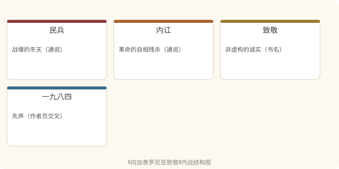

向加泰罗尼亚致敬
一、基本信息
| 作者 | 奥威尔 |
|---|---|
| 成书/出版 | 1938年（作者页注记：Britannica——向加泰罗尼亚致敬 (1938)——非虚构） George Orwell — Encyclopaedia Britannica（百科全书） |
| 国别/地区 | 英国 |
| 时代 | 近代 · 20世纪30年代末 |
| 体裁 | 纪实文学 |
| 语言 | 英语 |

《向加泰罗尼亚致敬》内战结构图（主题·结构图）
二、创作背景
作者页注记：向加泰罗尼亚致敬——'（Britannica 列举 1938）'——非虚构与随笔。
Britannica：奥威尔——《一九八四》《动物农场》作者（作者页交叉）。
题材（通说待核）：西班牙内战中的民兵经历——斯大林派与统一社会党的内讧。
三、内容脉络
（通说待核）奥威尔赴西班牙参战与喉部中弹。
（通说待核）五月事变与'托派'的清洗。
四、主要人物表
| 人物 | 身份 | 说明 |
|---|---|---|
| 奥威尔 | 民兵/记者 | （通说待核） |
五、主题与艺术特点
- 革命的内讧（通说待核）。
- '诚实报告'的非虚构伦理（作者页语境——待核）。
- 《一九八四》的前史（作者页交叉）。
六、影响与评论
- Britannica：Homage to Catalonia (1938)（作者页注记）。
George Orwell — Encyclopaedia Britannica（百科全书） - Britannica：奥威尔散文'Politics and the English Language'（作者页注记——并列）。
George Orwell — Encyclopaedia Britannica（百科全书）
七、阅读建议
难点
- 西班牙内战各派系。
- 非虚构的第一人称。
- 《向加泰罗尼亚致敬》中译本（人民文学等——通说待核）。
- 英文原版。
奥威尔非虚构首选；与《一九八四》对读。
八、待核实
- 派系细节核对（POUM说——通说）。
- 1938年出版细节待核。
- 喉部中弹细节待核。